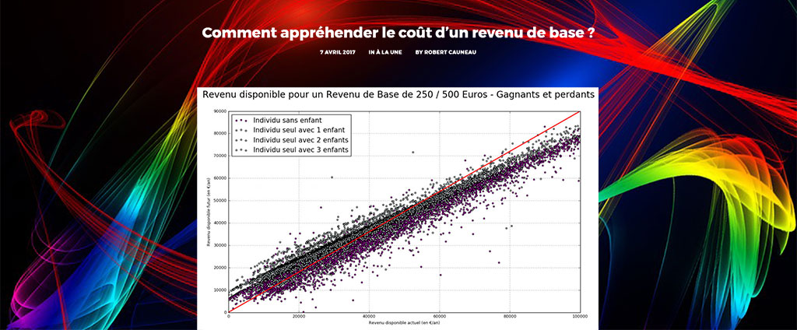

From an individual situation, calculate any variable of a national tax and benefit system.
Mes Aides uses OpenFisca and its Web API to inform French citizens on their eligibility to national and local benefits.
Assess company taxes
Model any kind of entity and evaluate its eligibility to fiscal obligations and benefits.
Embauche uses OpenFisca and a specific extension to allow employers and accountants to assess the hiring cost a new employee, including fiscal deductions.
Evaluate reforms impact
Compare the law now to what it could be.

This publication (in french) of the French Movement for a Basic Income uses OpenFisca to evaluate the cost and benefits of a reform introducing a basic income in France.Get started 🙌